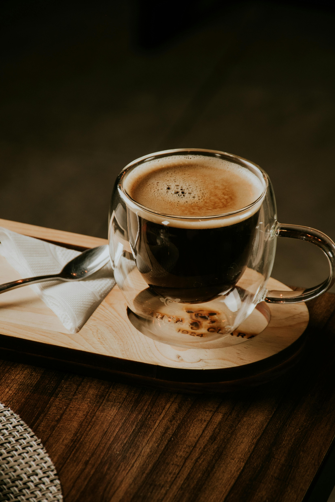
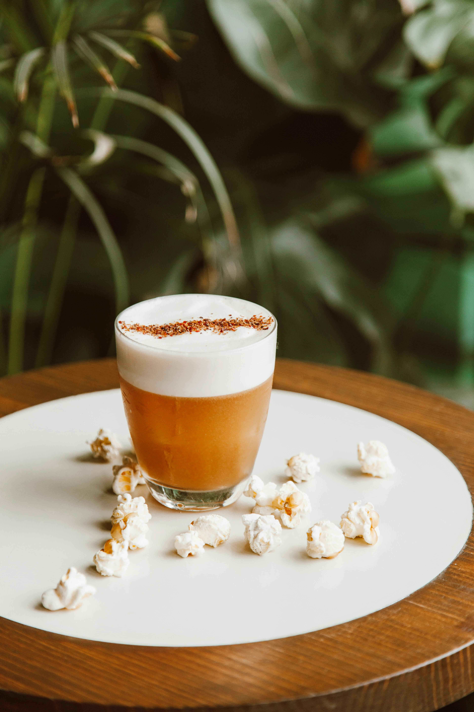
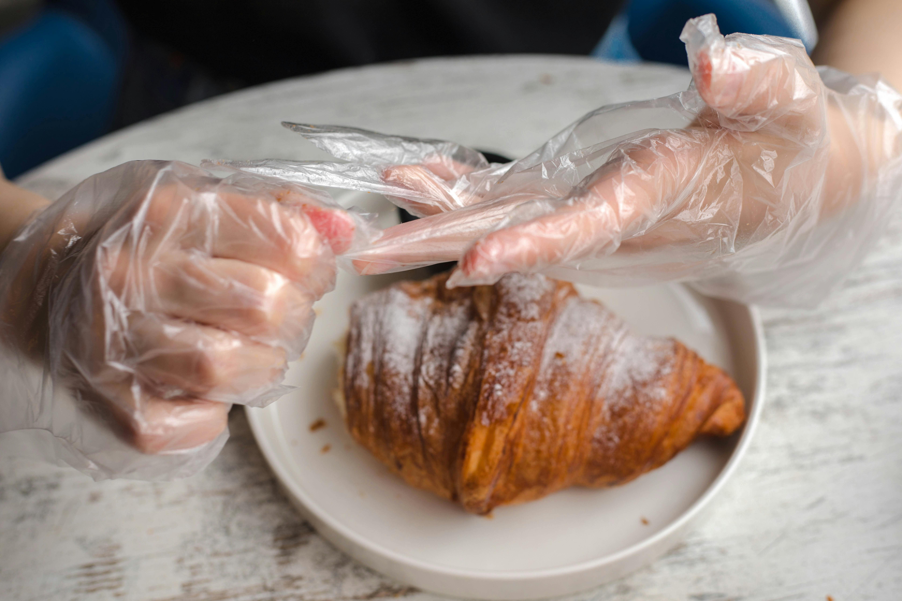
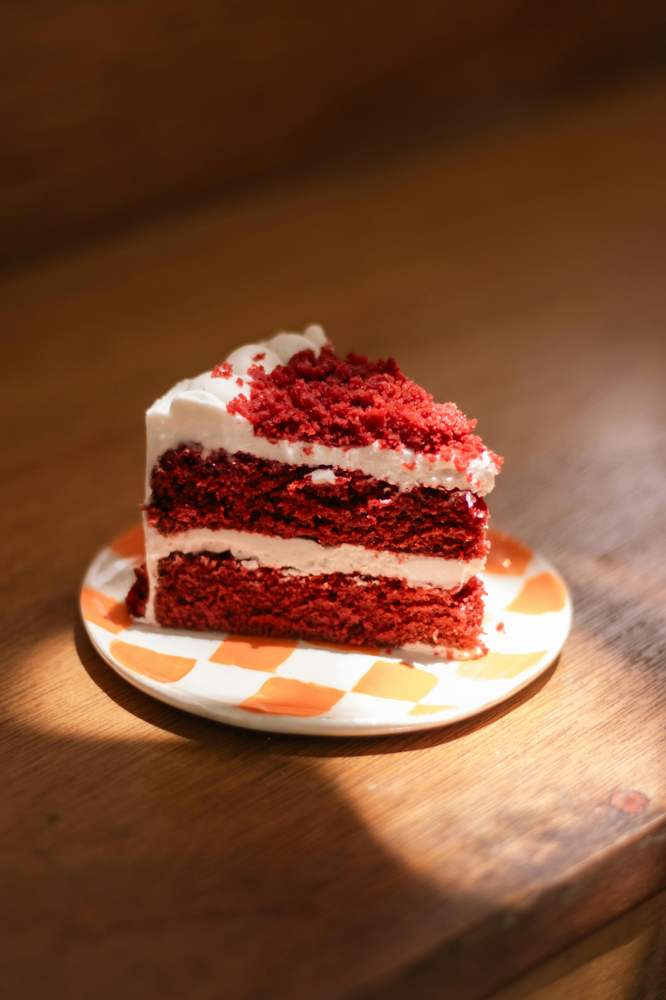
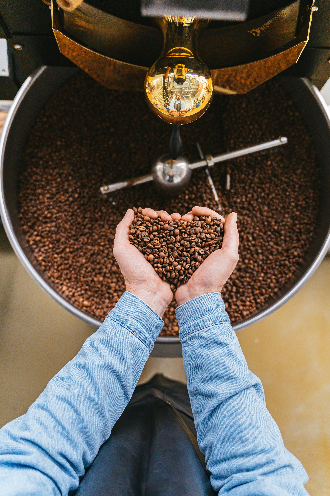
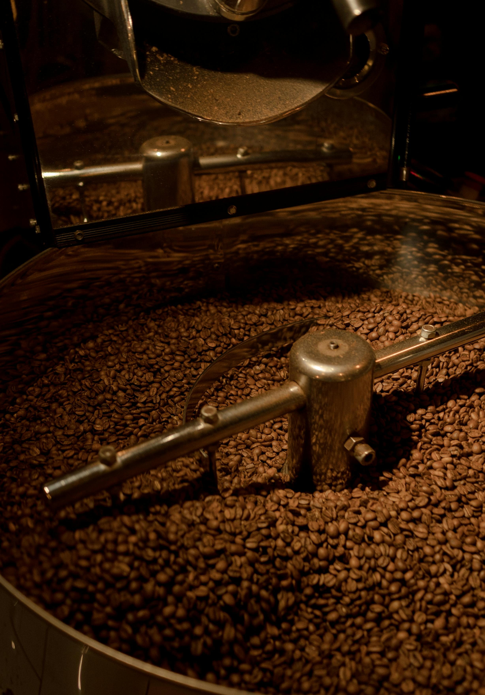

Bienvenue chez Cream Coffee Shop
Nos Offres
Découvrez nos multitudes de café, pâtisseries et nos ateliers de torréfaction.


Toutes sortes de café chauds et glacés y compris notre iconique Café Crème 💖


Pâtisseries Maison préparées chaque matin


Ateliers de Torréfaction pour les curieux
☕ CreamCofeeshop, c'est la crème de la crème du café artisanal. Un Café, Une Histoire, Un Savoir-faire.
Une rencontre entre deux passionnées de café: Notre Café est bien plus qu’un simple Coffee shop. C’est un lieu où chaque tasse raconte une histoire, celle d’un savoir-faire transmis et d’une quête incessante de qualité. Tout a commencé autour d’une tasse de café, partagée entre amis ☕🤝☕, où l’idée de créer un espace dédié à l’univers du café a germé. L’objectif était clair : offrir aux amateurs de café une expérience unique, alliant qualité, convivialité et pédagogie. Au cœur de notre démarche se trouve la torréfaction artisanale, un art qui permet de révéler toute la richesse des arômes du café. Contrairement à la torréfaction industrielle, qui privilégie la rapidité et la standardisation, c'est un processus lent et maîtrisé, garantissant une qualité supérieure du produit final . Chaque grain est torréfié avec soin, à une température modérée, permettant ainsi le développement optimal des arômes et la préservation de la fraîcheur du café.
Un engagement envers la qualité et la durabilité: Chez Creamcofeeshop, nous sélectionnons nos grains de café avec rigueur, en privilégiant des producteurs respectueux de l’environnement et des pratiques durables. Nous croyons en une approche éthique du commerce, assurant une rémunération juste pour les producteurs et contribuant à une filière du café plus responsable🌿🌍♻️.
Des ateliers pour partager notre passion: Afin de transmettre notre amour du café et de la torréfaction, nous organisons régulièrement des ateliers. Ces moments conviviaux permettent à chacun de découvrir les secrets de la torréfaction, d’apprendre à déguster un café de qualité et de comprendre les subtilités qui font toute la différence.☕
"Un café délicieux dans un cadre apaisant. Les ateliers sont très instructifs Je pense offrir un ateier surprise pour ma grand-mère qui est faan de café 🤔."
Claire D.
"Les pâtisseries sont faites maison et absolument irrésistibles."
Marc L.
"La qualité du café est juste WOW et la crème est à tomber! Moi qui devait réduire un peu le café cela risque d'être compliqué 😛🤣"
Amy T.
"J'y reviendrais à coup sûr!."
Sadia N.